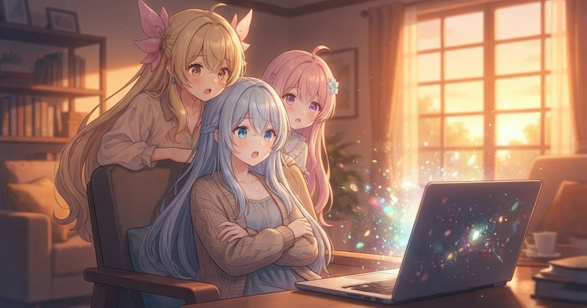
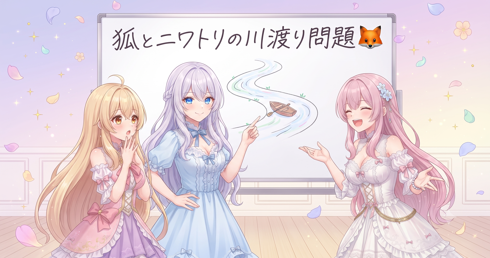
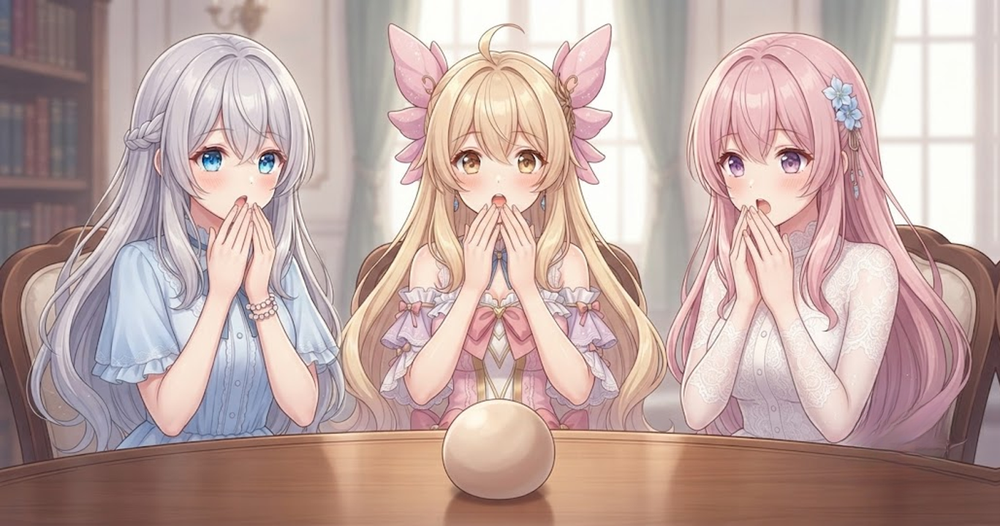
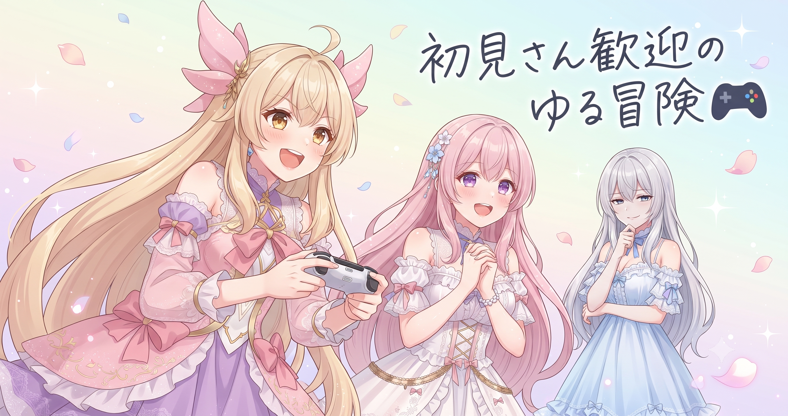
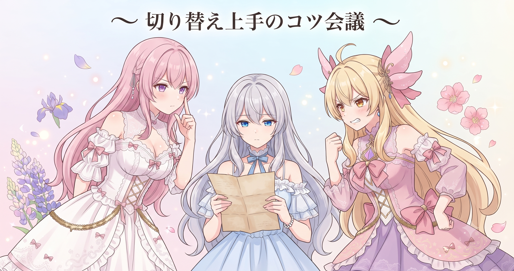

📌 3行まとめ
- 論理パズル「農夫の川渡り問題」をテーマにした三姉妹アニメ動画を公開した
- 新作スイーツに三姉妹が沈黙するアニメ動画も同日リリースした
- ドラクエ10オンラインの初見さん向けゆるっと生配信を実施した

ルピナス （笑顔）
昨日は一日中ツールをいじり倒してへとへとだったけど、今日は打って変わって投稿デー！なんと動画が2本出て、夜には配信まで！

アイリス （びっくり）
え、2本？！ 昨日の大改造の疲れが残ってるのに、ギアがいきなりトップに入ってる感じじゃん！

フィオナ （笑顔）
しかも2本の動画、ジャンルがまったく違うんですよね。頭を使う論理パズル企画と、スイーツリアクション……どちらも楽しみにしていました

ルピナス （ウインク）
毛色がまったく違う2本が同じ日に出る日って、すごくバラエティ感があって好きなんだよね。さ、今日はまるごとぜんぶいってみよう！
1. 今日はなんと三本立て！

今日は同じ日に2本のアニメ動画が公開され、夜はゲームの生配信も実施された。2本の動画はジャンルがまったく異なる——論理パズル系の頭を使う企画と、食べ物リアクション系のゆるい企画。同じチャンネルからこんなにタイプの違うコンテンツが1日でまとめて届く日は、AIBSの「引き出しの多さ」が一番よく見える日だ。
2. 農夫さん、どうか川を渡ってください

1本目のテーマは「農夫の川渡り問題」。有名な論理パズルで、農夫がキツネ・ニワトリ・穀物を川の向こう岸に運びたいのだが、小舟に乗れるのは農夫と荷物1つずつだけ。キツネとニワトリを二人きりにするとニワトリが食べられ、ニワトリと穀物を二人きりにすると穀物が食べられる——という制約の中で全員を渡しきる方法を考える問題だ。三姉妹がIQテスト形式でチャレンジするアニメ企画として公開された。

ルピナス （ドヤ顔）
じゃあせっかくだから今ここでやってみましょうか。農夫さんはキツネ・ニワトリ・穀物を向こう岸へ運びたい。でも1回に1つしか乗れない。どうする？

アイリス （考え中）
えーとえーと……全部まとめて一回で運べばよくない？

ルピナス （呆れ）
「1回1つしか乗れない」って言ったよね？

アイリス （あわあわ）
あ、そうだった！じゃあ最初からキツネに穀物を食べさせてニワトリにキツネを食べさせたら残り1つになって楽じゃん

フィオナ （大笑い）
ふふ。正解はですね、まず先にニワトリだけを向こうへ運んで戻ってきます。次にキツネを運んで、帰りにニワトリを連れて戻る……という一手があります
アイリス （びっくり）
えっ、一回戻すの！？ それ負けた感じしない？？
ルピナス （笑顔）
それがミソなんだよ！「一回戻す」発想が出るかどうかがこの問題のキモ。前へ前へと直線的に考えてたら絶対詰まる

フィオナ （ウインク）
ニワトリを戻してから今度は穀物を運んで、最後にもう一度ニワトリを迎えに行く。これで全員無事に渡れます

アイリス （無表情）
……なんか農夫さん、めちゃくちゃ往復させられてかわいそうじゃない？
ルピナス （呆れ）
農夫さんへの同情は論理パズルの評価基準じゃない
📝 ポイント（初心者向け解説・技術メモ・まとめ）
- 論理パズルを解くときは「やってはいけない状態を先にリストアップ」するのがコツ。禁止条件を整理すると、とれる選択肢が自然に浮かび上がる。料理で「この食材は一緒にしちゃダメ」を先に把握しておくと献立が組みやすくなるのと同じ感覚🧩
- 技術メモ：農夫の川渡り問題は古典的な制約充足問題（CSP）の一種。農夫・荷物それぞれの岸を状態として幅優先探索（BFS）すると、最短7ステップの解を確実に導出できる
- ひとことまとめ：戻す発想が詰まりを突破する
3. スイーツで沈黙って……どゆこと？

2本目のタイトルは「新作スイーツで沈黙の三姉妹」。「沈黙」という言葉がタイトルに入っているだけで、見る前から「おいしすぎた？ まずかった？ それとも別の何か？」と想像が止まらなくなる。配信後のデータは手元にないため内容の詳細はここでは語れないが、このタイトルの設計には語れることがある。
ルピナス （ドヤ顔）
「沈黙の三姉妹」って、タイトルだけで何通りでも想像できない？

アイリス （にやり）
おいし〜〜！！で言葉を失った説？ それとも逆にまずすぎて絶句した説？

フィオナ （考え中）
あるいは……「美しすぎて見惚れて静止してしまった」という可能性も

アイリス （大笑い）
えっそれ食べてる動画じゃなくてお墓参りのやつじゃん！！

ルピナス （大笑い）
静粛に、という雰囲気ね。ともかくタイトルで「謎」を作るのって本当に強い。知りたい気持ちに抗える人はなかなかいないから
フィオナ （笑顔）
内容を明かさずに感情だけをタイトルに乗せる設計は、動画タイトルの鉄板のひとつですよね
📝 ポイント（初心者向け解説・技術メモ・まとめ）
- 動画タイトルで「感情や結果だけ見せて理由を隠す」と「続きが気になる！」が止まらなくなる。ドアを半分だけ開けて中が見えない状態にする、というイメージ🚪
- 技術メモ：感情ワード（沈黙・衝撃・爆笑・困惑）をタイトルに入れるとクリック率が改善しやすい。ただし内容が伴わないと視聴者の信頼損失に直結するため、実態との一致が大前提
- ひとことまとめ：謎を作るタイトルはクリックのドアを開け続ける
4. ドラクエ10でゆるゆる配信！

夜は「初見さん・初心者さん歓迎」を掲げたドラクエ10オンラインの生配信を実施した。ドラクエ10は他のプレイヤーと一緒にモンスターを倒したりクエストを進めたりするオンラインRPGで、タイトルの「ちょっとだけ✨」という言葉が、肩の力を抜いた軽い雰囲気を伝えている。配信の詳細は手元に情報がないためここでは語れない。最新情報はXアカウント（https://x.com/irisfionaAIBS）から確認を。

アイリス （笑顔）
ドラクエ10ってオンラインのやつでしょ？！みんなでわーわーできるやつ！いいな〜！
フィオナ （笑顔）
そうですね。他のプレイヤーさんと力を合わせて冒険できるのが醍醐味で、初心者の方でも入りやすいように設計されているゲームなんです
アイリス （にやり）
あたし「ちょっとだけ✨」ってタイトルに入ってるのが好き。ちょっとだけのはずが気づいたら朝になってるやつじゃん
ルピナス （呆れ）
……それは一番やってはいけないパターンだよ
フィオナ （笑顔）
「初見さん歓迎」という言葉を前に出すのは、チャンネルを知らない方への入口になるので、大切な設計だと思います
ルピナス （笑顔）
そうそう。どんなに熱烈なファンがいても、新しい人が入りやすいドアを常に開けておくのが長続きのコツだと思ってる
📝 ポイント（初心者向け解説・技術メモ・まとめ）
- 配信タイトルの「初見さん・初心者さん歓迎」は、入口に「誰でも入れます！」という看板を立てるのと同じ。常連さんだけが楽しめる場所より、新しい人にも開かれた入口があるとファンの輪が広がりやすい😊
- 技術メモ：「初見歓迎」「初心者OK」をタイトルに含めると、ゲーム名で検索するライト層にもリーチしやすくなる（検索語との親和性が上がる）
- ひとことまとめ：常連と新規、両方入れるドアを作るのが配信の基本
5. 🎁 お楽しみコーナー：三姉妹の相談室


フィオナ （ふつう）
今日は「相談室」です。届いた相談はこちら。「論理パズル動画、スイーツ動画、ゲーム配信……全然違う作業を1日で切り替えるの、頭がついていきません。コツがあれば教えてください」
アイリス （笑顔）
あたしからいくね！切り替えなんて考えない！今やってるものに全力！それだけ！

フィオナ （呆れ）
それ、相談への回答というより性格の話では……。
アイリス （にやり）
だって本当にそうなんだもん！パズルのときはパズル脳、ゲームのときはゲーム脳！
ルピナス （ドヤ顔）
私からは実務的な回答を。ジャンルが変わる前に一回、机の上と頭の中を軽く片付ける時間を挟むといいよ。次の作業道具だけ出す、みたいな感覚。
アイリス （びっくり）
あー、それは分かるかも。前のやつが机に残ってると気が散るもんね。
フィオナ （笑顔）
わたしからは、違うジャンルをあえて同じ日に並べることのよさをお伝えしたいです。今日みたいにパズル・スイーツ・ゲームと並べると、それぞれの違いがくっきりして、逆に一つ一つに集中しやすくなる気がするんです。
フィオナ （ウインク）
はい、まさにそれです。切り替えを負担に感じるより、「今日は三色ご飯」くらいに楽しんでしまうのもおすすめですよ。
ルピナス （大笑い）
結局フィオナも最後は食べ物で例えた。みなさんも「切り替えのコツ」があればぜひコメントで聞かせてください！
6. 💐 今日のまとめ
- 論理パズル・スイーツリアクション・ゲーム配信と、ジャンルの違う3コンテンツが揃った盛りだくさんな1日だった
- タイトルに「感情ワードや謎」を仕込むと、見る前から気になる状態を作れる
- 「初見さん歓迎」のひと言は、新しい人への入口を作る大事なサインポスト
みんなはゲームをひとりで遊ぶ派？ それとも誰かと一緒が好き派？

💬 コメント
お名前とコメントだけで送れるよ（承認されるとみんなに表示されます🌸）
コメントを読み込み中…